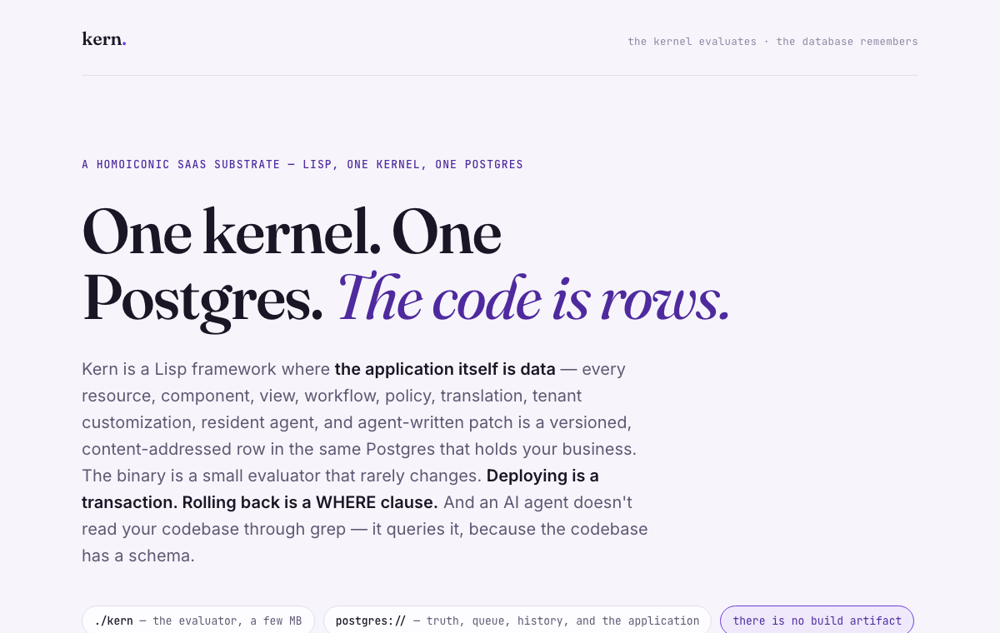
kern
SpecA homoiconic SaaS substrate in Lisp — every view, workflow, policy, and even agent-written patch is a versioned row, evaluated by a tiny kernel.
LispPostgres
So I run a lot of them. Everything here is an idea I gave a night or two — substrates, frameworks, languages, and tools, most built solo in spare hours. The barrier to trying something didn't move. It disappeared.
I'm Chris Kluis. For nearly two decades I've worked the seam where product, marketing, and go-to-market meet in B2B SaaS — I took an enterprise software company from on-prem to SaaS to acquisition, and turned one too many "there has to be a better way" posts into co-founding SaaSRock. Back then I was the idea guy; a developer built everything.
So for years the deal was the same: dream it, write it up, hand it off. A new UX paradigm for relationship-aware data, APIs that could teach an LLM agent themselves — things I had no way to build myself. The tooling finally changed that. Everything here is me building the ideas I used to have to give away — and an open invitation for every other idea person to start experimenting too.
Data platforms where the application itself lives in the database. One kernel, one Postgres, governance as a first-class citizen — three different bets on the same idea.
A Go kernel runs strict-TypeScript apps admitted as content-addressed Postgres rows. Deploy is a commit; rollback is an as-of WHERE clause — and nothing lands unverified.
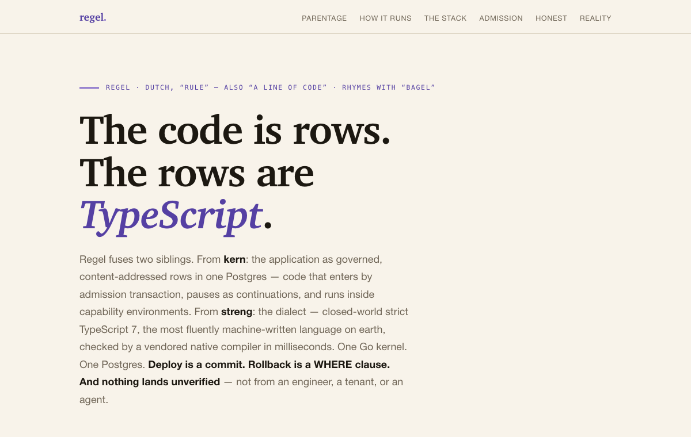

A homoiconic SaaS substrate in Lisp — every view, workflow, policy, and even agent-written patch is a versioned row, evaluated by a tiny kernel.
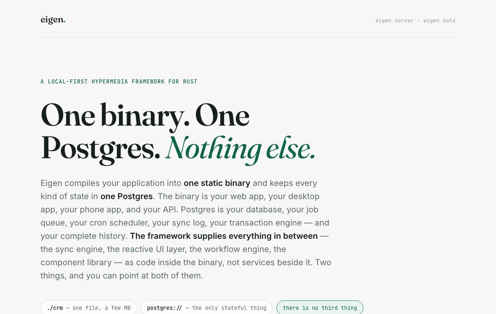
A local-first hypermedia framework for Rust — one static binary is the app, desktop, and API; Postgres holds everything; PII stays hidden offline.
Opinionated ways to ship products faster — a hypothetical G# ecosystem of full-stack frameworks, and one shipped foundry for launching many SaaS products on a single substrate.
A governed B2B-SaaS foundry that presets the boring 80% — identity, CRM, billing, support, and the product UI — as six governed idioms on one Postgres per product. Support your tenants without ever seeing their customers.
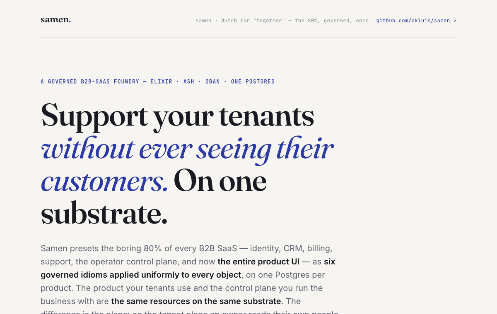
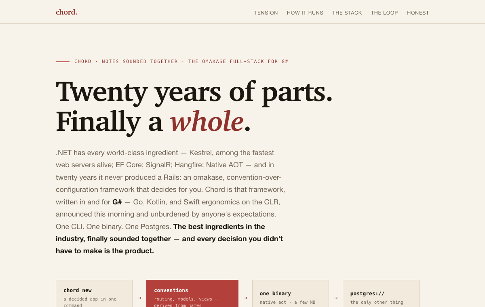
The omakase full-stack for G# — every decision made for you, batteries included, one blessed way to do each thing.
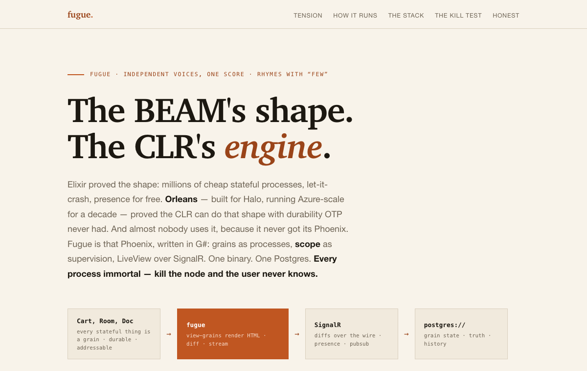
The Phoenix of G#, on Orleans — a distributed-by-default app framework built on virtual actors.
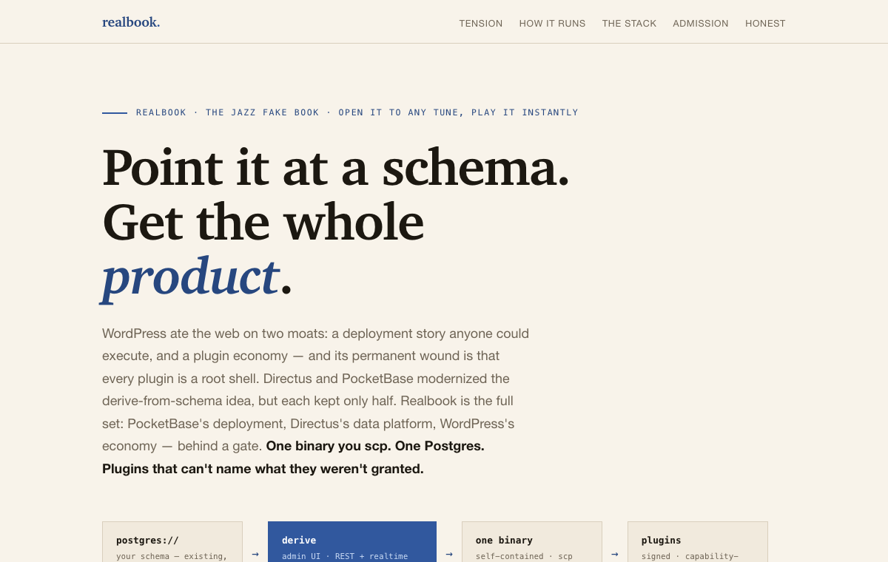
The WordPress of G#, with a gate — content and commerce, governed by admission instead of a plugin free-for-all.
Little languages with strong beliefs about the world they compile into.
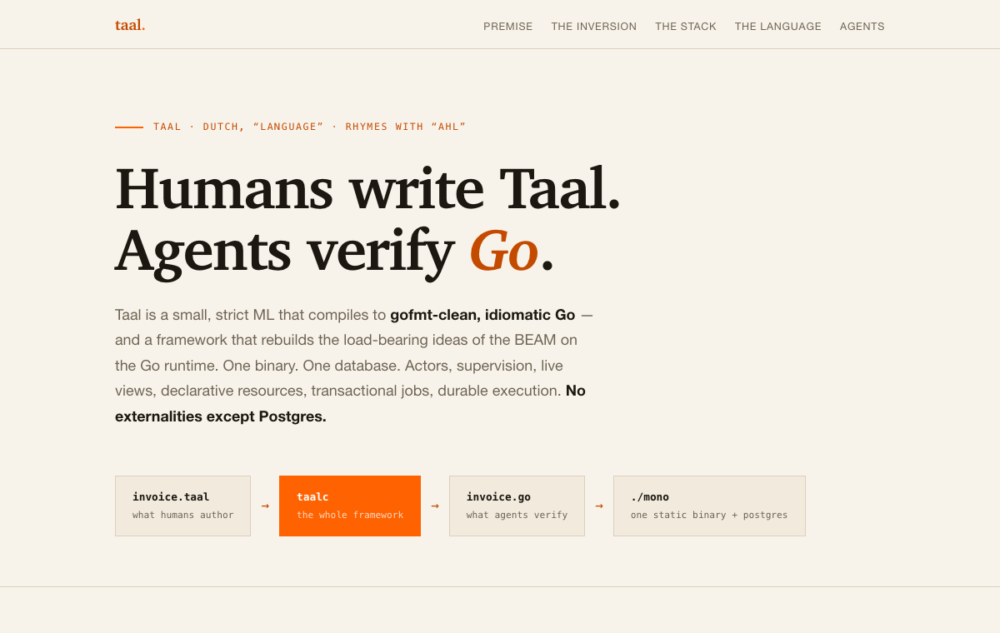
A small language for building the BEAM on Go — Erlang-style actors and supervision trees, without the VM.
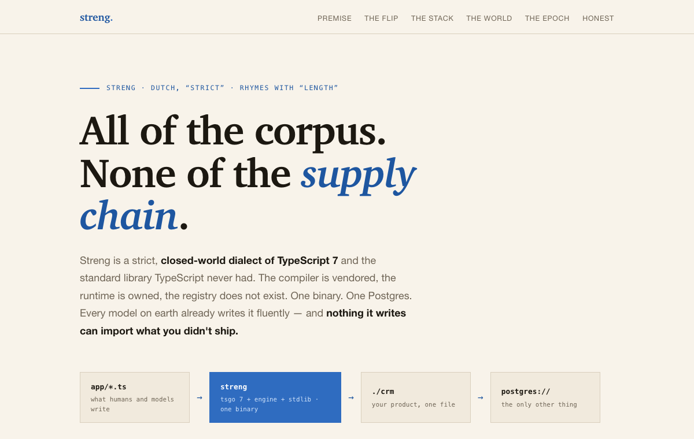
A closed-world TypeScript — all of the corpus, none of the supply chain, checked by a vendored native compiler in milliseconds.
Shipped software people can actually run — and two that stay home for good reasons.
A full growth engagement from one URL — analysis, positioning, a rebuilt site inside a guided preview, and a GTM kit per customer group. Evidence-graded and self-contained: it opens from a file, no server, no AI slop.
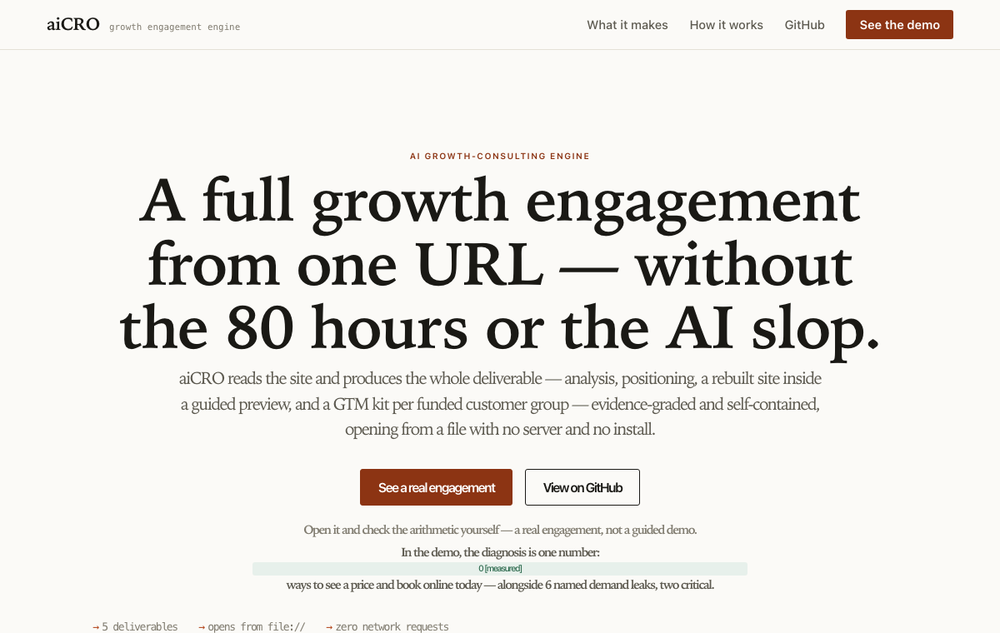
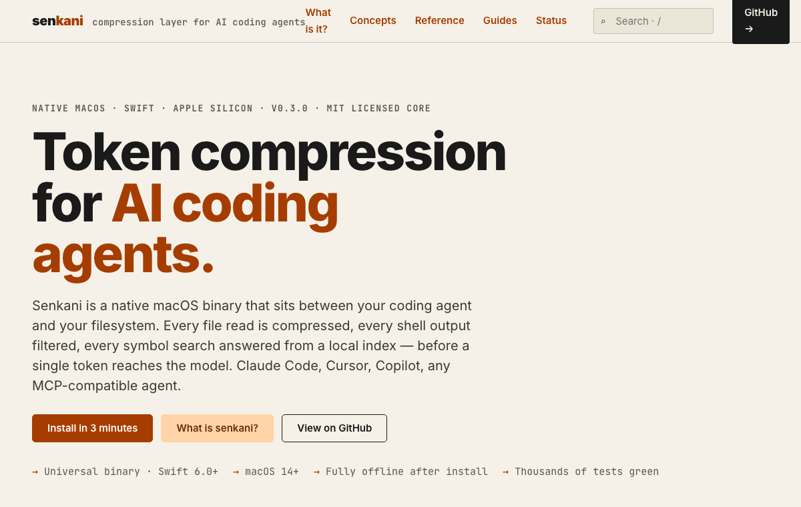
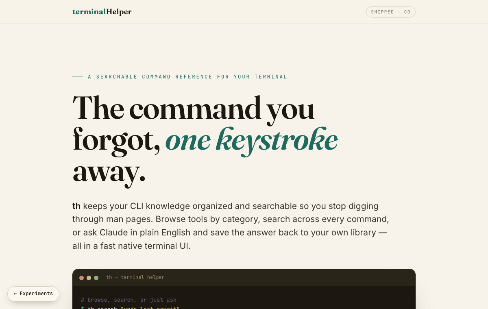
A searchable, browsable command reference for your terminal — a Miller-column TUI, full-text search, and an ask-Claude escape hatch that saves answers to your library.
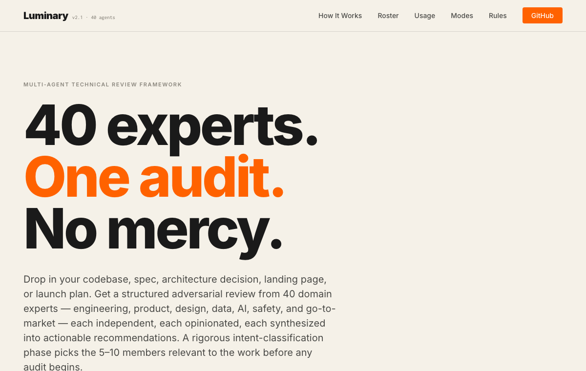
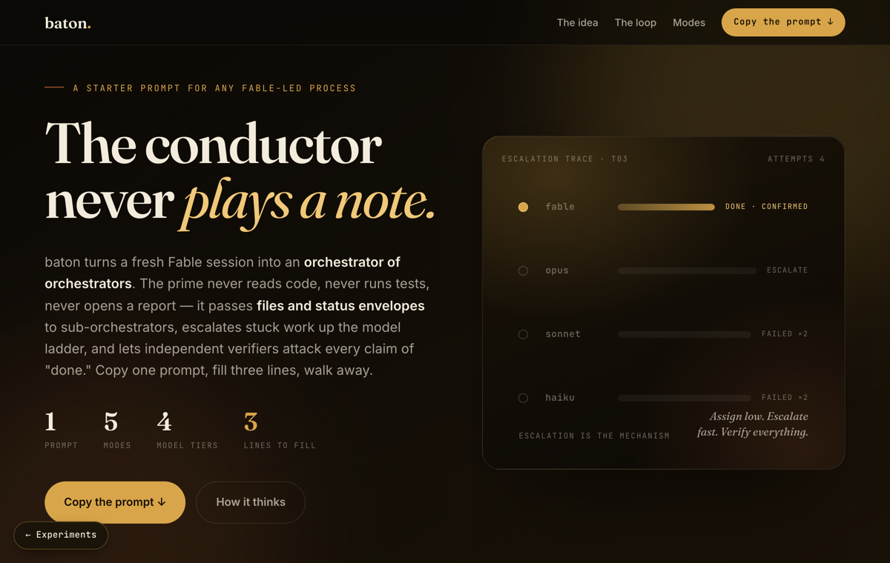
An orchestrator of orchestrators — one starter prompt that turns a fresh Fable session into a file-passing, tier-escalating, adversarially verified multi-agent run. Fill three lines, walk away.
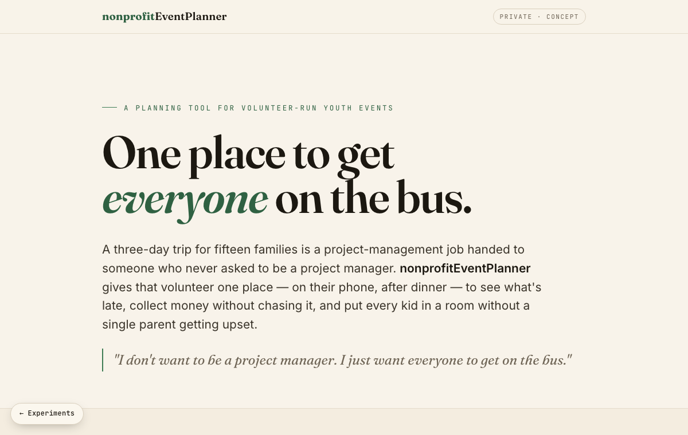
One place for a volunteer to run a whole youth trip — rooming, chaperones, money tracked (not chased), and parents onboarded by magic link.
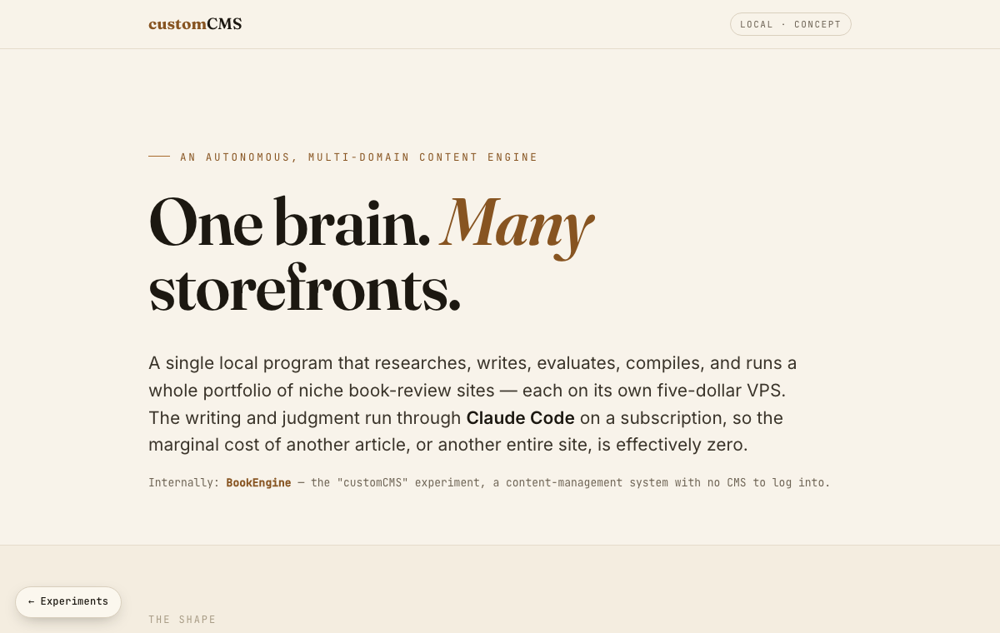
BookEngine — one local brain that researches, writes, compiles, and runs many niche book-review sites on cheap VPSes, driven by Claude at zero marginal cost.